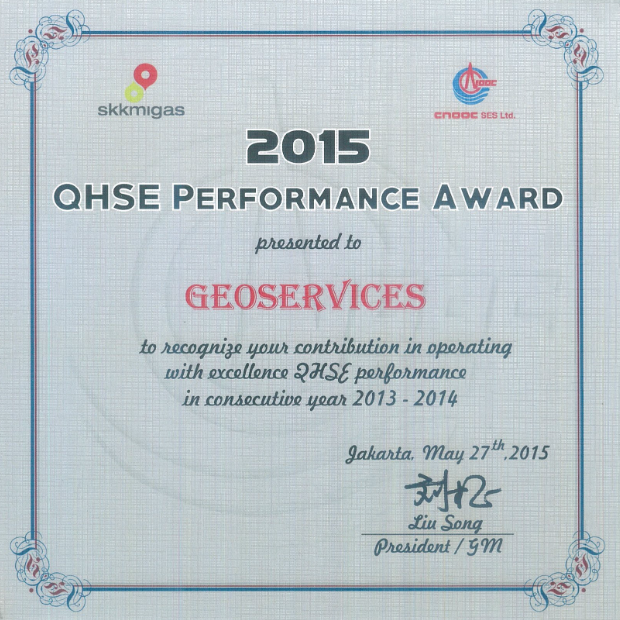

Engineering, Procurement & Construction

In 1997, PT Geoservices established its Engineering Procurement Construction (EPC) Division, which became a member of the Association of Sandblasting Contractors (ASC). This division specializes in construction services for the oil and gas industries, handling both onshore and offshore projects.
EPC’s excellent reputation comes from being safe, on time, conscientious, and diligent, with efficient clean-up. The division is confident that it can complete any job to your satisfaction.
Please call for a free estimate, and be assured of a reasonable price.
Services
Capabilities:
Turn Key / Total Platform Refurbishment
Individual EPC Projects:
- Overall Project Management
- Cutting Plans & Vendor Data Compilation
- Design Engineering
- Procurement Engineering Studies & Processes (Structures, Piping, & Equipment)
- Installation (Plant & Platform, Onshore & Offshore)
- Pre-fabrication (Minor Structures)
- Materials Take-off
- Hook-up
- Commissioning
Specific Services for Fabrication, Manufacturing, and Construction:
- Platform Structural Modifications
(fabrication, repair and installation of deck framing, deck extension, deck plating, handrails, gutters, drains, and painting)
- Platform Appurtenances
(fabrication, repair, and installation of stairways, pump caissons, pipe clamps, boat. landings, riser and conductor protectors, and similar structures)
- Piping Installations and Modification
(fabrication, repair, and installation of process piping, pipe supports, valves, fittings, process facilities, painting of completed installations)
- Welding, Blasting, Painting, and Coating
Construction Management Includes:
- Procurement and Logistics
- Resource Development and Training
- Providing Manpower Resources (labor supply)
- Providing Expertise (consultancy services)
- Facilities Maintenance and Upgrades
Rental Construction Support Equipment:
- Welding Machines
- Air Compressor
- Hydraulic Excavators
- Tractors
- Mobile Crane
- Cylinders
Achievement
